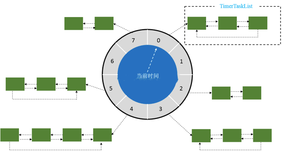
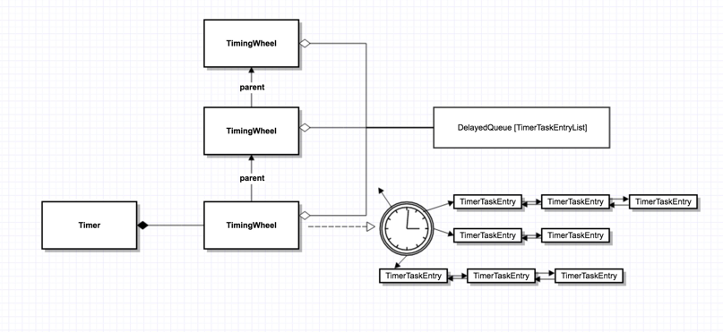
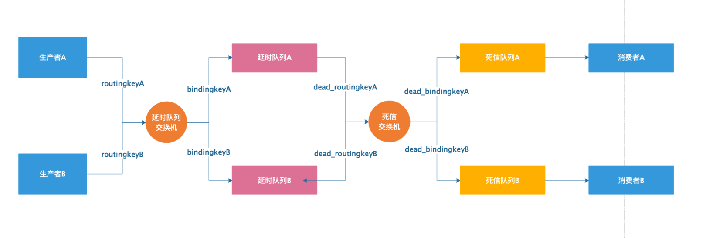
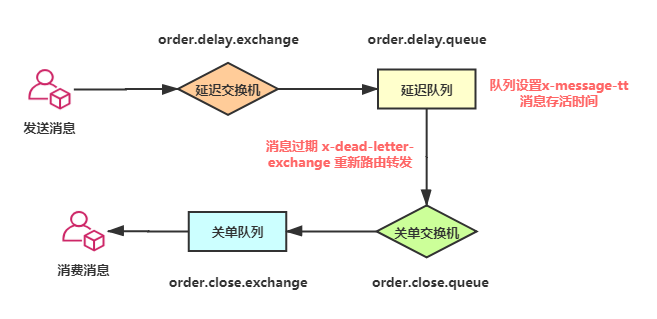
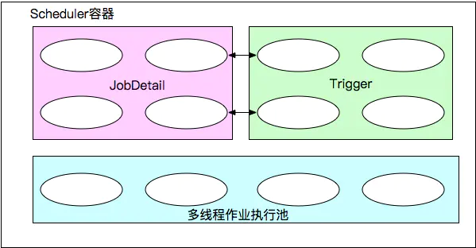

延迟任务
什么是延迟任务
顾明思议，把需要延迟执行的任务叫做延迟任务
延迟任务得使用场景
- 订单下单之后 30 分钟后，用户如果没有付钱，系统需要自动取消订单，并退还库存
- 如何定期检查处于退款状态的订单是否已经退款成功
- 重试机制实现：把调用失败的接口放入一个固定延时的队列,到期后再重试
- 新创建的店铺：如果在十天内都没有上传过商品，则自动发送消息提醒
- 用户发起退款：如果三天内没有得到处理则通知相关运营人员
- 预定会议后：需要在预定的时间点前十分钟通知各个与会人员参加会议
- 关闭空闲连接：服务器中，有很多客户端的连接，空闲一段时间之后需要关闭之
- 清理过期数据业务：比如缓存中的对象，超过了空闲时间，需要从缓存中移出
- 多考生考试：到期全部考生必须交卷,要求时间非常准确的场景
- 任务超时处理：在网络协议滑动窗口请求应答式交互时，处理超时未响应的请求
- 订餐通知：下单成功后60s之后给用户发送短信通知
- 红包 24 小时未被查收，需要延迟执退还业务
- 每个月账单日，需要给用户发送当月的对账单
延迟任务实现思路
延迟任务实现的关键是在某个时间节点执行某个任务。基于这个信息可以想到实现延迟任务的手段有以下两个：
- 自己手写一个“死循环”一直判断当前时间节点有没有要执行的任务
- 借助 JDK 或者第三方提供的工具类来实现延迟任务
- 通过 JDK 实现延迟任务能想到的关键词是：DelayQueue、Timer、ScheduledExecutorService
- 第三方提供的延迟任务执行方法就有很多了，例如：Redis、Netty、MQ 等手段
实现方式
- 定期轮询（数据库等）
- JDK（DelayQueue、Timer、ScheduledExecutorService周期性线程池）
- 时间轮（Kafka、Netty的HashedWheelTimer）
- Redis有序集合（zset）
- Zookeeper之curator
- MQ（RabbitMQ）
- Quartz，xxxjob等定时任务框架
- Koala（考拉）
- JCronTab（仿crontab的java调度器）
- SchedulerX（阿里）
- 有赞延迟队列
- ……
轮询
特点：定期轮训数据库，设置状态
优点：实现简单
缺点：
- 对服务器内存消耗大
- 存在轮询延迟
- 数据量过大时会消耗太多的IO资源，效率太低
DelayQueue
特点：无界、延迟、阻塞队列
优点：JDK自带，轻量级，使用简单
缺点：
- 存储在内存，由于内存限制如果需要延迟得数量量过大很容易出现OOM异常
- 服务器重启会造成数据丢失，可配合redis使用
- 如果数据量庞大，推荐使用MQ消息中间件实现
实现方式
- BlockingQueue（无界阻塞队列）+PriorityQueue（堆排序优先队列：内部使用完全二叉树实现队列元素排序）+Delayed
- DelayQueue中存放的对象必须实现Delayed接口，并重写compareTo(Delayed)方法和getDelay(TimeUnit)方法。
- getDelay方法返回该元素距离失效还剩余的时间，当<=0时元素就失效了， 就可以从队列中获取到。
Timer
Timer是一种定时器工具，用来在一个后台线程计划执行指定任务。它可以计划执行一个任务一次或反复多次。TaskQueue中的排序是对TimerTask中的下一次执行时间进行堆排序，每次去取数组第一个
优点：JDK自带，使用简单
缺点：
- 不支持多线程，任务只能串行执行，任务执行时间长影响其它任务
- 一个任务抛出异常，其它挂在Timer下得所有任务都会无法继续执行
- 不能指定绝对的日期或者时间、无法高可用（节点挂了，任务不能执行）
ScheduledExecutorService
可以实现 Timer 类具备的所有功能，并且它可以解决了 Timer 类存在的所有问题
特点：支持多线程，同时在线程中对异常进行了封装
时间轮（Kafka）
名词解释
tickMs：时间轮由多个时间格组成，每个时间格就是tickMs，它代表当前时间轮的基本时间跨度。
wheelSize：代表每一层时间轮的格数
interval：当前时间轮的总体时间跨度，interval=tickMs × wheelSize
startMs：构造当层时间轮时候的当前时间，第一层的时间轮的startMs是TimeUnit.NANOSECONDS.toMillis(nanoseconds()),上层时间轮的startMs为下层时间轮的currentTime。
currentTime：表示时间轮当前所处的时间，currentTime是tickMs的整数倍（通过currentTime=startMs - (startMs % tickMs来保正currentTime一定是tickMs的整数倍），这个运算类比钟表中分钟里65秒分针指针指向的还是1分钟）。currentTime可以将整个时间轮划分为到期部分和未到期部分，currentTime当前指向的时间格也属于到期部分，表示刚好到期，需要处理此时间格所对应的TimerTaskList的所有任务
特点：时间轮更适合任务数很大的延时场景，它的任务插入和删除时间复杂度都为O(1)。
延迟超过时间轮所能表示的范围有两种处理方式，
- 通过增加一个字段-轮数，Netty 就是这样实现的
- 多层次时间轮，Kakfa 是这样实现的。
相比而言 Netty 的实现会有空推进的问题，而 Kafka 采用 DelayQueue 以槽为单位，利用空间换时间的思想解决了空推进的问题

数据结构
Kafka并没有使用JDK自带的Timer或者DelayQueue来实现延迟的功能，而是基于时间轮自定义了一个用于实现延迟功能的定时器（SystemTimer）。JDK的Timer和DelayQueue插入和删除操作的平均时间复杂度为O(nlog(n))。
Kafka中的时间轮（TimingWheel）是一个存储定时任务的环形队列，底层采用数组实现，数组中的每个元素可以存放一个定时任务列表（TimerTaskList）。TimerTaskList是一个环形的双向链表，链表中的每一项表示的都是定时任务项（TimerTaskEntry），其中封装了真正的定时任务TimerTask。在Kafka中对这个TimeTaskList是用一个名称为buckets的数组表示，使用DelayQueue对时间轮里面的bucket放入延迟队列

Netty
Netty 通过提供的工具类 HashedWheelTimer 来实现延迟任务，底层数据结构依然是使用DelayQueue，只是采用时间轮的算法实现。
优点：效率高,任务触发时间延迟时间比DelayQueue低，代码复杂度比DelayQueue低。
缺点：
- 服务器重启后，数据全部消失，怕宕机
- 集群扩展相当麻烦
- 因为内存条件限制的原因，比如下单未付款的订单数太多，那么很容易就出现OOM异常
构造函数参数含义
- ThreadFactory ：表示用于生成工作线程，一般采用线程池
- tickDuration和unit：每格的时间间隔，默认100ms
- ticksPerWheel：一圈下来有几格，默认512，而如果传入数值的不是2的N次方，则会调整为大于等于该参数的一个2的N次方数值，有利于优化hash值的计算
- TimerTask：一个定时任务的实现接口，其中run方法包装了定时任务的逻辑
- Timeout：一个定时任务提交到Timer之后返回的句柄，通过这个句柄外部可以取消这个定时任务，并对定时任务的状态进行一些基本的判断
- Timer：是HashedWheelTimer实现的父接口，仅定义了如何提交定时任务和如何停止整个定时机制
Redis
Redis 实现延迟任务的方法可分为两类
- 通过Zset数据判断方式：主要利用它的score属性，redis通过score来为集合中的元素进行大小写的排序
- 通过键空间通知方式：默认情况 Redis 服务器端是不开启键空间通知的，需要通过 config set notify-keyspace-events Ex 的命令手动开启或者修改redis.conf文件开启notify-keyspace-events Ex，开启键空间通知后，就可以拿到每个键值过期的事件
MQ
AMQP协议本身没有直接支持延迟队列功能，但是可以通过提供的一些特性模拟出延迟队列的功能
Rabbitmq实现延时队列的两种形式
-
利用两个特性： Time To Live(TTL)、Dead Letter Exchanges（DLX）
实现原理

-
TTL即消息的存活时间。RabbitMQ可以针对Queue设置x-expires 或者 针对Message设置 x-message-ttl，来控制消息的生存时间，它的值是一个非负整数，单位为微秒，如果超时(两者同时设置以最先到期的时间为准)，则消息变为Dead Letter(死信)
RabbitMQ针对队列中的消息过期时间有两种方法可以设置。
- 通过队列属性设置，队列中所有消息都有相同的过期时间。
- 设置消息过期时间，对队列中的某一条消息设置过期时间，每条消息TTL可以不同。
如果同时使用，则消息的过期时间以两者之间TTL较小的那个数值为准。消息在队列的生存时间一旦超过设置的TTL值，就成为Dead Letter
-
DLX即死信交换机，绑定在死信交换机上的即死信队列。RabbitMQ的Queue可以配置x-dead-letter-exchange 和x-dead-letter-routing-key（可选）两个参数，如果队列内出现了Dead Letter，则按照这两个参数重新路由转发到指定的队列。
- x-dead-letter-exchange：队列中出现Dead Letter之后将Dead Letter重新发送到指定exchange（交换机）
- x-dead-letter-routing-key：出现Dead Letter之后将Dead Letter重新按照指定的routing-key发送，一般为要指定转发的队列
队列出现Dead Letter的情况有：
- 消息或者队列的TTL过期
- 队列达到最大长度
- 消息被消费端拒绝（basic.reject or basic.nack）并且requeue=false
实现流程

-
-
使用 rabbitmq-delayed-message-exchange 插件实现延迟功能
Quartz
- Quartz是一个任务调度框架（库），几乎可以集成到任何应用系统当中
- Spring对Quartz进行很好的封装集成
- 非常的轻量级，只需要少量的配置
- 非常好的容错机制，并且可以在重启服务的时候持久化定时任务，保证任务不会丢失
核心概念：调度器，任务和触发器
三者关系：调度器负责调度各个任务，到了某个时刻或者过了一定时间，触发器触动了，特定任务便启动执行

scheduler是一个计划调度器容器（总部），容器里面可以盛放众多的JobDetail和trigger，当容器启动后，里面的每个JobDetail都会根据trigger按部就班自动去执行。
JobDetail是一个可执行的工作，它本身是有状态的。
Trigger代表什么时候去调。
当JobDetail和Trigger在scheduler容器上注册后，形成了装配好的作业（JobDetail和Trigger所组成的一对儿），就可以伴随容器启动而调度执行了。
scheduler是个容器，容器中有一个线程池，用来并行调度执行每个作业，这样可以提高容器效率
相关代码实现地址：GitHub